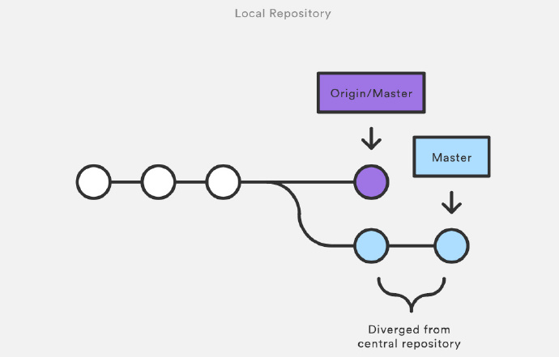

这篇文章是针对 Git Flow & Git 命令 的 总结。
我花费了很大精力才完成的！
1. 基本概念
1.1 Git V.S. SVN
SVN 是 集中化 的版本控制系统, 虽然能够令多个团队成员一起协作开发, 但有时如果中央服务器宕机的话, 谁也无法在宕机期间提交更新和协同开发。甚至有时, 中央服务器磁盘故障, 恰巧又没有做备份或备份没及时, 那就可能有丢失数据的风险。
Git 是 分布式 的版本控制系统, 客户端不只是提取最新版本的快照, 而且将整个代码仓库镜像复制下来。如果任何协同工作用的服务器发生故障了, 也可以用任何一个代码仓库来恢复。而且在协作服务器宕机期间, 你也可以提交代码到本地仓库, 当协作服务器正常工作后, 你再将本地仓库同步到远程仓库。
1.2 功能 & 特性
- 版本控制 & 多人协作开发
- 强大的 分支特性, 所以能够灵活地以 不同的工作流 协同开发
- 分布式版本控制系统, 即使协作服务器宕机, 也能继续提交代码或文件到本地仓库, 当协作服务器恢复正常工作时, 再将本地仓库同步到远程仓库。
- 直接记录快照, 而非差异比较
有关以上特性的详细解释, 请查看 Pro git 的 git 基础章节
1.3 Git 基本技巧
(1) Git 命令别名
关于具体如何使用命名别名技巧, 请查看 Pro git 的技巧和窍门
2. Git Flow
由于 git 拥有强大的 分支特性, 它的工作流比较灵活而缺乏约束, 于是参考 Atlassian Git Tutorial 的 Comparing Workflows 章节, 在此提供 五种 Git 工作流:
2.1 Basic Workflow (基本工作流)
2.2 Centralized Workflow (集中式工作流)
2.3 Feature Branch Workflow (功能分支工作流)
2.4 Gitflow Workflow (Gitflow 工作流)
2.5 Forking Workflow (Forking 工作流)
最后会介绍一个集大成者: 一套 开发流程(分支策略和发布管理) 模型, 先看图眼馋一下。
2.1 Basic Workflow (基本工作流)
- 在 git 版本控制的目录下修改某个文件
- 使用
git add命令对修改后的文件快照, 保存到暂存区域 - 使用
git commit命令提交更新, 将保存在暂存区域的文件快照永久转储到 Git 目录中
2.2 Centralized Workflow (集中式工作流)
过渡到分布式版本控制系统看起来像一个艰巨的任务, 但如果你充分利用好 git 的话, 你不必改变你既有的工作流, 你的团队可以采用与之前使用 SVN 一样的方式来开发项目。
(1) 如何工作

- 从远程仓库 (central repository) 克隆工程到本地仓库 (local repository) —
git clone - 在本地仓库编辑文件和提交更新 —
git add和git commit - fetch 远程仓库已更新的 commit 到本地仓库和 rebase 到已更新的 commit 的上面 —
git fetch和git rebase或git pull --rebase - push 本地主分支 (master branch) 到远程仓库 —
git push
(2) 管理冲突

- 何时发生冲突: 在开发者发布它们功能之前, 他们需要 fetch 远程仓库已更新的 commit 到本地仓库和 rebase 到已更新的 commit 的上面。有时, 本地提交与远程提交会发生冲突, git 会暂停 rebase 过程来让你手动解决冲突。
- 如何解决冲突: 你可以使用
git status和git add来手动解决合并时冲突。
2.3 Feature Branch Workflow (功能分支工作流)
Feature Branch Workflow 的主要思想就是在 开发每个功能 时都应该创建 一个独立的分支 而不只是使用主分支。由于每个分支是独立且互不影响, 这就意味着主分支不会包含 broken code, 对持续集成环境是很有帮助的。
(1) 如何工作

- 仍然使用远程仓库 (central repository) 和主分支 (master branch) 记录官方工程的历史
- 开发者每次开发新功能时都创建一个新分支 —
git checkout -b - Feature branches 应该推送到远程仓库 (central repository) —
git push - 发送 pull request 来请求管理员能否合并到主分支 (master branch)
- 发布新功能到远程仓库 (central repository)
(2) Pull Request
Pull request 是一种当开发者完成一个新功能后向其他团队成员发送通知的机制。它的使用过程如下:

- 开发者可以通过 Github 或 Bitbucket 发送 pull request
- 其他的团队成员审查、讨论和修改代码
- 项目维护者合并新增功能分支到主分支 (master branch), 然后关闭 pull request
2.4 Gitflow Workflow (Gitflow 工作流)
Feature Branch Workflow 是一种非常灵活的开发方式。对于一些规模比较大的团队, 最好就是给特定的分支赋予不同的角色。除了 功能分支 (feature branch), Gitflow Workflow 还使用独立的分支来 准备发布 (preparing)、维护 (maintaining) 和 记录版本 (recording releases)。下面我会逐个介绍这个几个分支: Historical Branches、Feature Branches、Release Branches 和 Maintenance Branches。
(1) Historical Branches

- master 分支 保存官方发布历史
- develop 分支 衍生出各个 feature 分支
(2) Feature Branches

- feature 分支 使用 develop 分支作为它们的父类分支
- 当其中一个 feature 分支完成后, 它会合并会 develop 分支
- feature 分支应该从不与 master 分支直接交互
(3) Release Branches

- release 分支 主要用来清理释放、测试和更新文档
- 一旦 develop 分支获得足够的功能来发布时, 你可以从 develop 衍生出一个 release 分支
- 一旦准备好上架, release 合并到 master 分支并且标记一个版本号
- 另外, 还需要合并回 develop 分支
(4) Maintenance Branches

- maintenance 分支 用来快速给已发布产品修复 bug 或微调功能
- 它从 master 分支直接衍生出来
- 一旦完成修复 bug, 它应该合并回 master 分支和 develop 分支
- master 应该被标记一个新的版本号
(5) 标记 Tags
使用两个命令来给 master 分支标记版本号:
git tag -a 0.1 -m "Initial public release" mastergit push origin master --tags
2.5 Forking Workflow (Forking 工作流)
Forking Workflow 与以上讨论的工作流很不同, 一个很重要的 区别 就是它不只是多个开发共享一个远程仓库 (central repository), 而是每个开发者都拥有一个独立的服务端仓库。也就是说每个 contributor 都有两个仓库: 自己的私有的远程仓库和官方的共享的远程仓库。

Forking Workflow 这种工作流主要好处就是每个开发者都拥有自己的远程仓库, 可以将提交的 commits 推送到自己的远程仓库, 但只有工程维护者才有权限 push 提交的 commits 到官方的仓库, 其他开发者在没有授权的情况下不能 push。Github 很多 开源项目 都是采用 Forking Workflow 工作流。
(1) 如何工作

- 在服务器上有一个官方公共的仓库
- 开发者 fork 官方仓库来创建它的拷贝, 然后存放在服务器上
- 当开发者准备好发布本地的 commit 时, 他们 push commit 到他们自己的公共仓库
- 在自己的公共仓库发送一个 pull request 到官方仓库
- 维护者 pull 贡献者的 commit 到他自己的本地仓库
- 审查代码确保它不会破坏工程, 合并它到本地仓库的 master 分支
- push master 分支到服务器上的官方仓库
- 其他开发者应该同步官方仓库。
2.6 终极开发流程 (分支策略和发布管理) 模型
先上图。
本节全部来自这篇文章: 一个成功的 Git 分支模型, 原文与译文都不错, 我就不转载了, 直接去看吧。
3. Git 命令清单
一般来说, 日常使用只要记住下图 6 个命令, 就可以了。但是熟练使用, 恐怕要记住 60～100 个命令。

下面是一份常用 Git 命令清单。几个专用名词的译名如下。
- Workspace: 工作区
- Index / Stage: 暂存区
- Repository: 本地仓库
- Remote: 远程仓库
你的本地仓库由 git 维护的三棵 “树” 组成。第一个是你的 工作目录, 它持有实际文件; 第二个是 暂存区(Index/Stage), 它像个缓存区域, 临时保存你的改动; 最后是 HEAD, 它指向你最后一次提交的结果。
文件状态
- 未跟踪 Untracked
- 已跟踪 Tracked
- 已修改 modified
- 已放入暂存区 staged
- 未修改 committed
3.1 配置与帮助 config help
Git 的设置文件为 .gitconfig, 它可以在用户主目录下(全局配置), 也可以在项目目录下(项目配置)。
|
|
3.2 新建代码库 init clone
|
|
3.3 增加 / 删除 / 移动文件 add rm mv
|
|
3.4 提交 commit
|
|
3.5 分支 branch checkout merge rebase cherry-pick
|
|
3.6 远程 fetch remote pull push
|
|
3.7 查看信息 status log shortlog diff show reflog blame bisect
|
|
3.8 撤销 checkout reset revert clean stash
常用 checkout 来撤销未暂存的修改, reset HEAD 来撤销没有提交的更改, revert 来撤销已经提交的更改。
|
|
3.9 标签 tag
|
|
3.10 其他
|
|
4 高级技巧
4.1 修改作者时间 / 提交时间
|
|
4.2 数据清理与数据维护
https://git-scm.com/book/zh/v1/Git-内部原理-维护及数据恢复
4.3 GitHub 技巧
在 GitHub 网页任意界面, 按 Shift + / 显示当前可用快捷键。